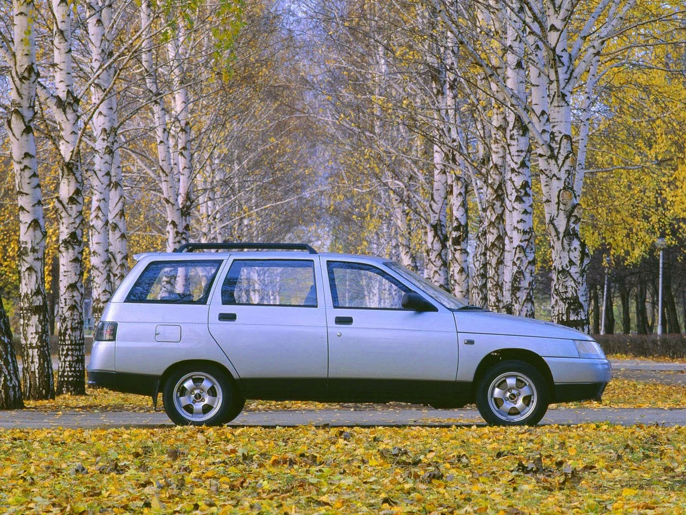
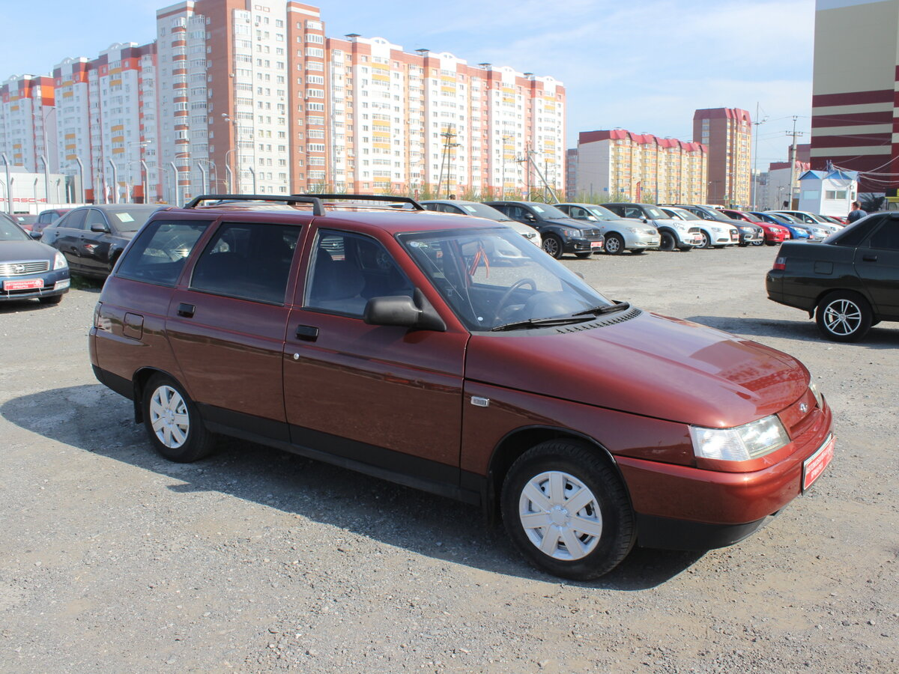
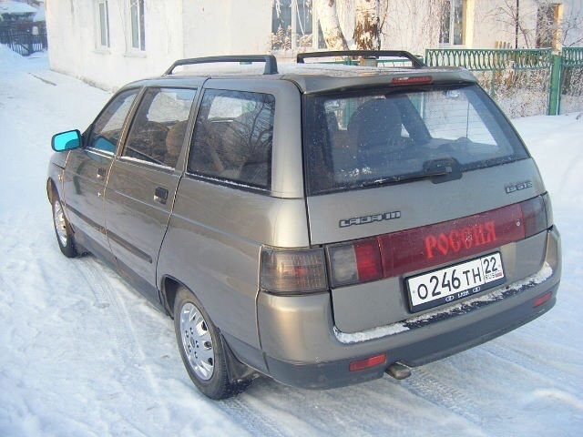
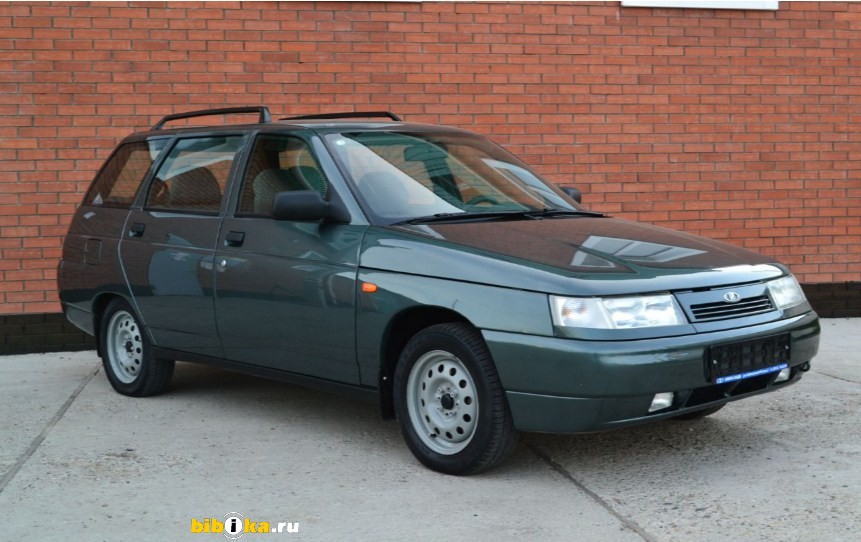
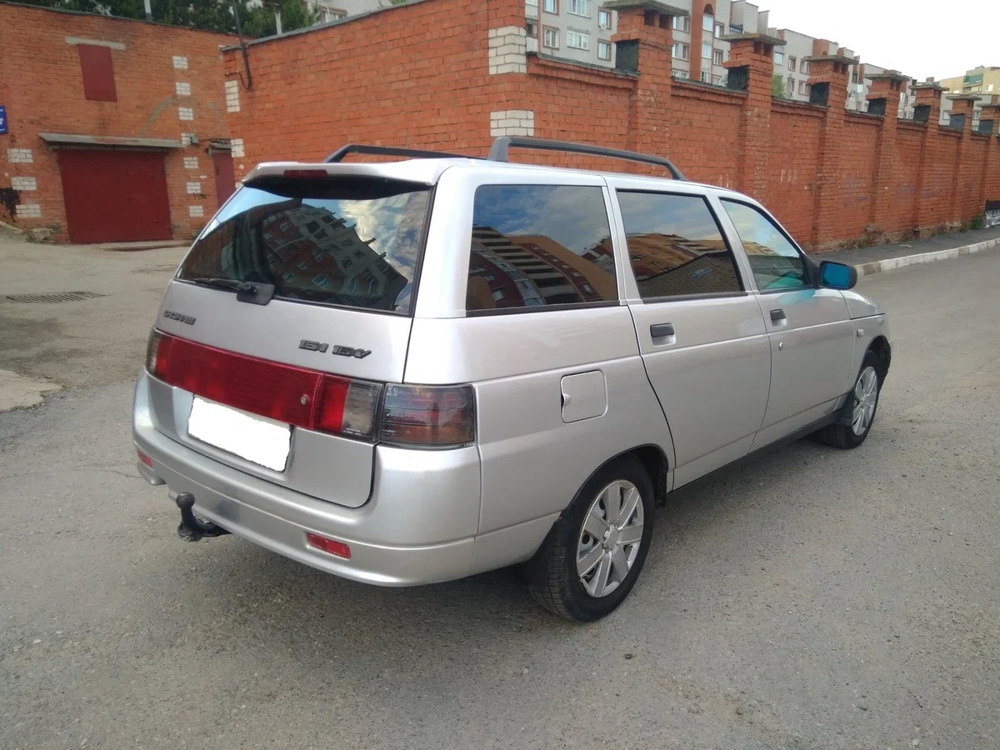
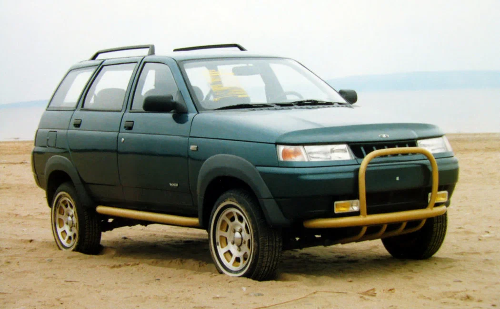

ВАЗ-2111 «Lada-111» (простореч. название «одинадцатая») — переднеприводный универсал на базе ВАЗ-2110, выпускался с 1997 по 2009 год. В феврале 2009 года АвтоВАЗ объявил о прекращении выпуска этой модели, однако на черкасском заводе «Богдан» данная модель выпускалась до 2014 года, но в немного изменённом виде под брендом Богдан 2111.
Модификация автомобиля, представленная моделями ВАЗ-211290 и ВАЗ-211190. В 1999 году предприятие «Лада-Консул» совместно с дизайнерской организацией DECON и НТЦ ОПП АВТОВАЗа создали внедорожник под названием «Тарзан 2». Данный автомобиль имел кузов от семейства переднеприводной модели ВАЗа (ВАЗ-2112) и раму с установленными на неё основными агрегатами от автомобиля «Нива» (подвески, КПП, раздаточная коробка передач, рулевое управление). Агрегаты, кроме карданных валов (была изменена длина), пружин, амортизаторов и рамы, были использованы от серийно выпускаемых автомобилей ВАЗ. Кузов смонтирован на раму через резиновые подушки. Задняя подвеска была позаимствована у «Нивы», что повлекло также перенос редуктора и приводных валов. Задние тормоза аналогичны передним, то есть дисковые, колёса 15-дюймовые. Несмотря на возросший на 150 кг вес относительно Нивы расход топлива нового вседорожника благодаря хорошей аэродинамике оказался заметно меньше. В дизайне также произошли изменения: сочленения рамы и кузова были закрыты мощными трубами в виде порогов, накладки на арки колёс, задававшие новую форму крыльям и размерами арки, и накладки, выполненные из труб, под передним и задним бамперами. В салоне изменилась облицовка центрального тоннеля: использовалась обшивка от ВАЗ-21213, и на ней находилось три рычага (КПП и ещё два, управления раздаточной коробкой). Автомобили изготавливали на заказ, общее число выпущенных «Тарзанов» не превысило нескольких сотен.
Ранний вариант:


Поздний вариант:


Тарзан-2:
